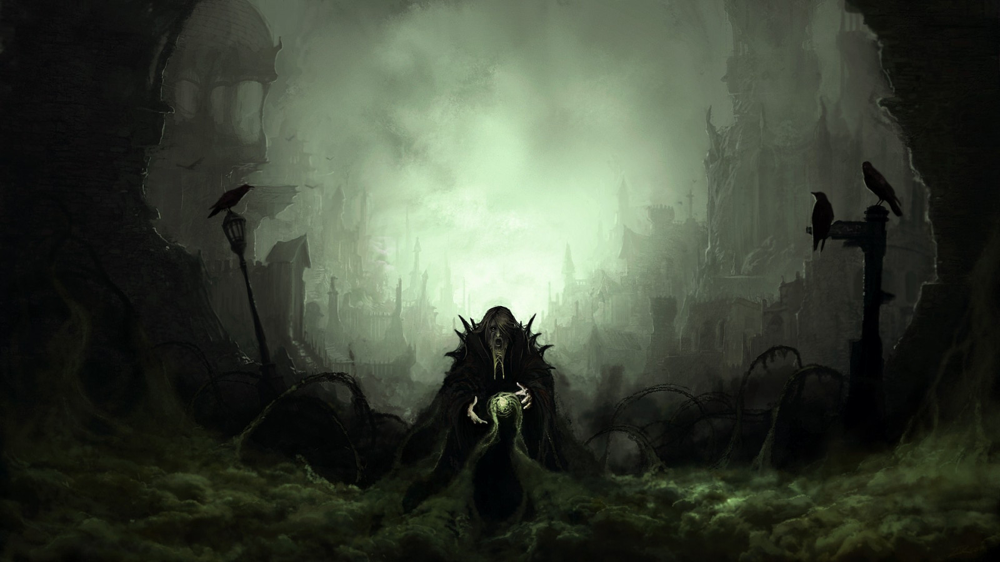
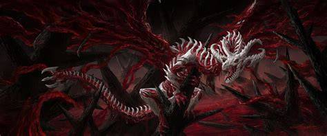
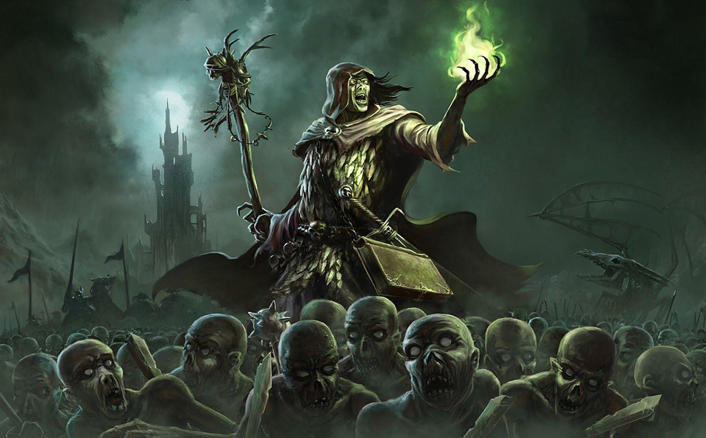
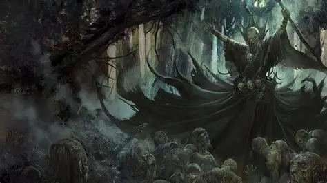

Korupcejis Ulum’har é a face mais “visível” da corrupção do Além: cultistas, corpos que andam, e criaturas que parecem impossíveis, mas que existem porque alguém insistiu em abrir uma fenda entre realidade e ódio. Eles crescem por captura, coerção e rituais. Quanto mais gente some, mais “matéria” eles têm. Quanto mais morte acontece perto deles, mais o mundo fica fraco. Para essa facção, a humanidade não é inimiga por ideologia. É recurso. Um corpo é um vaso. Uma alma é combustível. E cada ritual é um passo para transformar o continente num lugar onde o mofo não é doença, é lei.

Os Anjos de Sangue são o terror em forma de organização. Não são só monstros soltos. São uma facção com números absurdos, capaz de destruir nações inteiras quando decide agir com força total. Eles tratam carne, ossos e cartilagem como algo sagrado e prático ao mesmo tempo: um material que pode ser moldado em soldados, armas e horrores que voam. Onde passam, deixam menos do que ruína. Deixam a sensação de que o mundo foi “rebaixado” para um lugar onde a vida vale pouco. Quem lidera os Anjos de Sangue é a Matriarca: uma presença cuja vontade atravessa a facção como um instinto coletivo.

A Rúbrica Magistral é a facção que age como se estivesse escrevendo o destino do mundo com tinta feita de cadáver. Eles são a necromancia organizada, o tipo de inimigo que não precisa vencer batalhas agora, porque vence a guerra com planejamento. Onde a Rúbrica toca, o campo de batalha não termina quando a luta acaba, porque os mortos não ficam mortos. Eles estudam, registram, catalogam e melhoram a própria crueldade. O líder que fundou e comandou a Rúbrica Magistral foi o Arquinecromante. Mesmo quando ele não está mais presente como figura ativa, a estrutura e os métodos dele continuam guiando a facção como um manual vivo.

Acima de todas as forças que se opõem à humanidade existe uma mente que entende o tabuleiro inteiro. Alguém que não quer apenas matar reis ou derrubar muralhas, mas transformar a própria lógica do mundo para que a morte trabalhe do lado “certo”. Essa figura é o Primeiro Necromante. Ele não lidera como um general comum. Ele lidera como um fundador de era, movendo cultos, horrores e necromantes como peças. Se a Matriarca é o instinto que devora e a Rúbrica é a inteligência que calcula, o Primeiro Necromante é a intenção por trás de tudo: o objetivo final que faz cada massacre ter propósito.